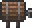

Mug
| Mug | |
|---|---|
| Statistics | |
| Type | Crafting material Furniture |
| Placeable | True |
| Dimensions | 1 wide1 high |
| Max stack | 99 |
| Use time | 14 |
| Tool | Right-click |
| Sell | 4 |
The Mug is a cup made of Glass. Its used to craft Ale. If placed as a decoration it functions as an Alchemy Station.
Crafting
Recipe
| Crafting Station | ||
|---|---|---|
| Ingredient(s) | Amount | |
| Glass | 1 | |
| Result | ||
| Mug | 1 | |
Used in
| Result | Ingredients | Crafting Station | |
|---|---|---|---|
| Ale | Mug(1) |  Keg | |
History
- 1.0.6: Introduced.